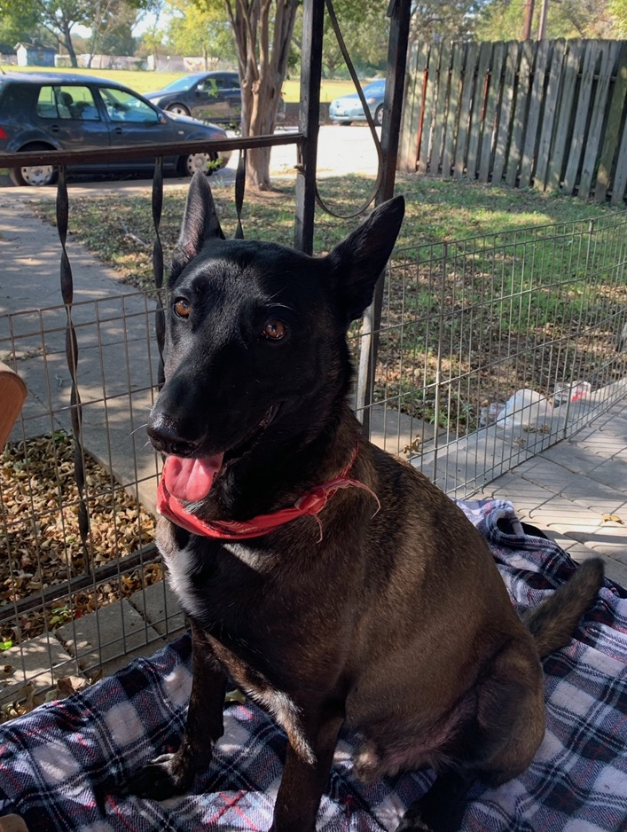

us
The haskell house is small but great! It's 101 years old and about 600 sq ft. Located in
east downtown it's a great spot for dog walking, minutes from the trail along the water
(fiesta park). We have a big backyard with a stocktank pool in the summer
and firepit in the winter. We vibed it out string lights, chimes and bells.
I'm Jessamyn, a software engineer and Greg is a music researcher and bass player in a
couple touring bands.
contact
amenities
Internet
name:uniana
password:bambino27
Projector, Bluetooth & Sonos
Projector
roll down screen > turn on power on black remote (firestick)
Bluetooth
turn on bluetooth (Soundsync A3352) > little black box on bookshelf > press button until light is blinking blue
Sonos
open app on iPad > under bottom menu click "Browse" > click on last option "Line-in" > then click "Audio Component: Family Room > banner at bottom of the screen should say "Family Room + Bathroom + Kitchen" and triangle ▶️ "play" should change to little square box ⏹️ "in play" > click on that bottom banner > it will switch to a screen that shows the volume on the bottom > click on the volume bar and drag volume bar to the right, all the way up for "Family Room" > the other two can be low or clicked off (mute) sonos beware: if you switch to music or anything else and have sonos all the way up it is CRAZY LOUD so make sure you slide down that dial for any / all of them down to very low BEFORE changing the auto source to Spotify or any other sonos app bluetooth box should turn solid blue and screen should have a pop up with "Connected to Soundsync A3352" sound troubleshoot for projector > on white projector controller > click "Picture" > use down arrows to select "sound out" > click "OK" > scroll to right until "LG Sound Sync / Bluetooth" > drop down to "DEVICE SELECTION" > click "OK" > when Sound menu appears click the down arrow until Paired Devies menu has pink check next to "Soundsync A3352" > click "OK" > little search dial can take a couple minutes > should see pop up "Connected to SoundSync" > recheck that SONOS is playing Audio Component > if you can't get it to work you can always back up to white controller > Picture > sound out > select "INTERNAL PROJECTOR SPEAKER" > click EXIT then turn volume up and down on white controller
Firestick
use black controller > click the up arrow to get to home > use wheel to scroll up down left right > under the category "Recent Apps" you can find all the apps we use so click through and watch what you want! Netflix | HBO Max | Amazon Prime | Apple TV | Paramount | Starz | Disney and prob some more I forgot > you can choose my profile / create a guest one / or log in with your stuff if you want - whatever works for you :)
Switch
it's hooked into the projector under HDMI 2 > set up sound with bluetooth same as above under "Projector & Sonos" > switch from firestick (HDMI1) to HDMI2 by clicking top right button that looks like a power plug 🔌 > scroll down > select > click OK > turn switch on with home button on controller or directly on the switch > there's a soft case with a few games and a few games stored in the memory > feel free to make a new profile and have fun!
Macbook
I left you my light silver MacBook Pro - it uses the older charger that's plugged in on the bedstand (I use it to watch shows to fall asleep :). There's another charger in the livingroom wall right of the couch > open up and choose guest > feel free to do whatever the heck you want in there, it's yours to use how you want!
Washer / Dryer
feel free to use if you want / need to! Bambino often has accidents in his soft crate when left in there if you have to leave the house > detergent on top of stacked washer/dryer > fill a capful in left compartment > set dial to cotton > make sure temperature is set to cold or warm, our water is scalding hot so it can ruin clothes and stuff lol
Cooking & Eating & Drinking
feel free to cook! eat and drink whatever you want in the fridge and pantry, nothing's off limits >
Stove
the stove is gas so it has to light the pilot > turn nob to the left with clicking sound until burner is lit > then keep turning to the right HIGH --> LOW > the front right burner sometimes won't light so have to use the electric lighter in the glass jar by the stoveOven
turn to the left - counterclockwise - takes about 15 to 30 seconds for pilot to light and it's... a loud "whoosh" sound that could take your eyebrows off if you're head is down there so PULL OUT THE SHEET PANS FIRST if that's what your using to cook > they're in the broiler drawer down belowmax
profile
Max is a 3 year old Belgian Malinois we adopted from APA last year, he's the sweetest, smartest most eager to love you kinda guy. He loves snuggling on the couch with you and following you around the house. He takes direction well and is learning boundries. He absolutely loves Dyna the black cat and is scared of Pina the Tortie, he growls at her sometimes when she gets close and he's sleeping. He will trample poor little Bambino when he's excited and doesn't really seem to have an awareness of where his body is, smacks his head and butt into the walls and tables daily :)
issues
medical
He was found on the side of the road last Feb 2020 after being hit by a car, he has metal plates fused in his front paws and major hip displasia which is why he's a little wobbily after laying down. He shouldn't be running too much, jumping or anything too rigorous as it might tear his metal plates (already tore his right one a few months ago but doesn't bother him at the moment) or put his hip sockets out of joint.
aggression
He has a tendency to be protective and can be aggressive with people, a couple close calls and one incident where he bit my sister in the middle of the night, I think he was startled but the bite did break skin and shook her up. It's risky to have anyone over and if you have food deliveries make sure he's away from the door, on walks avoid walking too close to people or dogs to be safe.
seperation anxiety
He also has separation anxiety and does not like being left alone, the crate training we've been doing has been helping a bit but, it's gonna take some time. Refer to the sections on training and leaving
training
So we did training with APA which was a helpful start but over the past year he has gotten more protective and aggressive with people. He growls at people waking up to the house, delivery people or mailman, or even people parking close. After the bite incident with my sister which, was right after nipping at a person walking behind him at a coffee shop and a runner going by our house when I foolishly had him out front off leash... we knew we needed professional intervention! She made sure we understood that we need to set boundries, claim stuff like the door and front window, don't let him come up to us for affection or follow us around. We had to be the leaders and initiate affection and invite him into our space. We use the corrective low toned growl sound: "BAHHHH" sometimes with a clap or water squirt if needed, then followed with a higher toned: "good boy!" usually 1 to 2 seconds after if he stops the undesired behavior: growling/barking/coming up for affection/violating the boundry of stay or walking ahead of us on leash. If he ever growls or barks at you - this is the correction we were told would work, also first greeting should be arms and hands up by the chest and no eye contact while he sniffs, when he finally ignores he gets a pet/tread/good boy - I'll leave all the printed materials... we certainly don't expect you to continue the training, you can spoil him and just have fun! But we want you to feel safe, secure and confident with our power breed!
food instructions
Get ready for this proprietary blend! Max gets fed twice a day in the morning and evening (usually around 3 or 4ish depending on when Bambino starts whining lol)
- Using the half cup scoop in the dry food bin, give him 2 scoops (1 cup) of dry in the big ceramic bowl.
- in the freezer is frozen rectangle boards that are actually 100% raw food, he gets half of one, thawed, either the day before in the fridge or at room temp for about 20 minutes
- lastly he gets a food topper, the small blue box in the fridge or new box on top of the dry food bin. About a large spoonful dollop
- add in some water and mix it all in, if the raw food is too frozen he might throw it up so make sure it's a nice soupy blend!
Here's the breakdown for each feeding:
Make him "Go to bed" in his crate while you're getting it all ready, he lays down and doesn't move. Then put it in front of him, wait a few seconds and say "Okay!" he will eat it laying down in his crate or even put it a few feet in front of the crate so he can stand up and eat it.
Fill his water bowl everyday, he drinks about half a gallon a day!